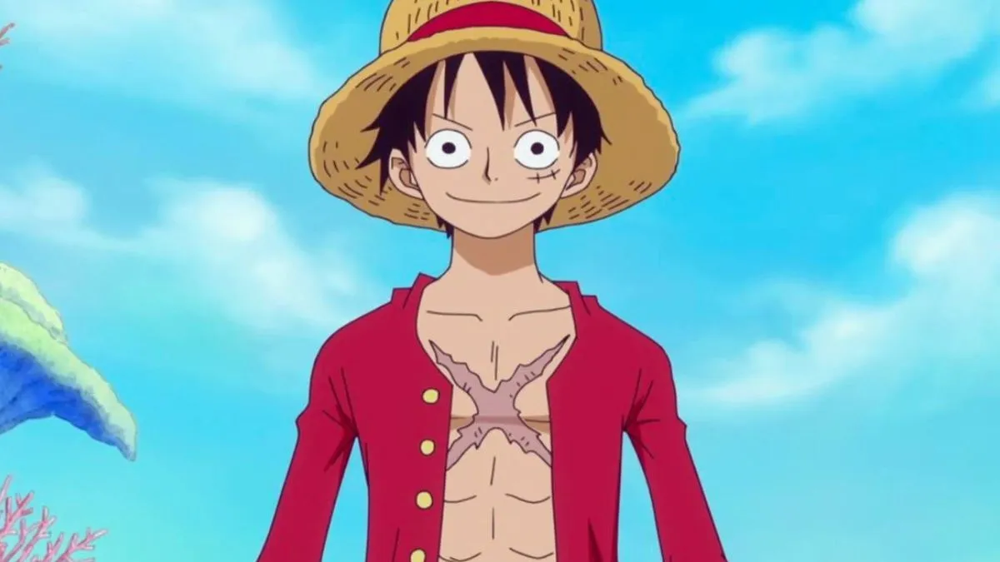

O perssonagem principal de One Piece é Monkey D.Luffy
Personalidade. Luffy é retratado como um garoto relaxado, despreocupado e alegre.
Ele tem um grande apetite, traço comum em protagonistas de mangás shōnen.
Otimista e de bom coração, Luffy não é muito inteligente mas também não tão estúpido quanto outros pensam ao vê-lo.
Aparência
Ele tem cabelos curtos e pretos, é magro porém definido, tem diversas cicatrizes com a que fica entre seu peito e sua barriga em formato de "X" e, atualmente usa uma camisa de botão vermelha com manga longa, shorts azul e um par de sandálias de palha. Luffy também tem seu icônico chapéu de palha, tanto que se tornou seu "Apelido" no mundo de One Piece.
